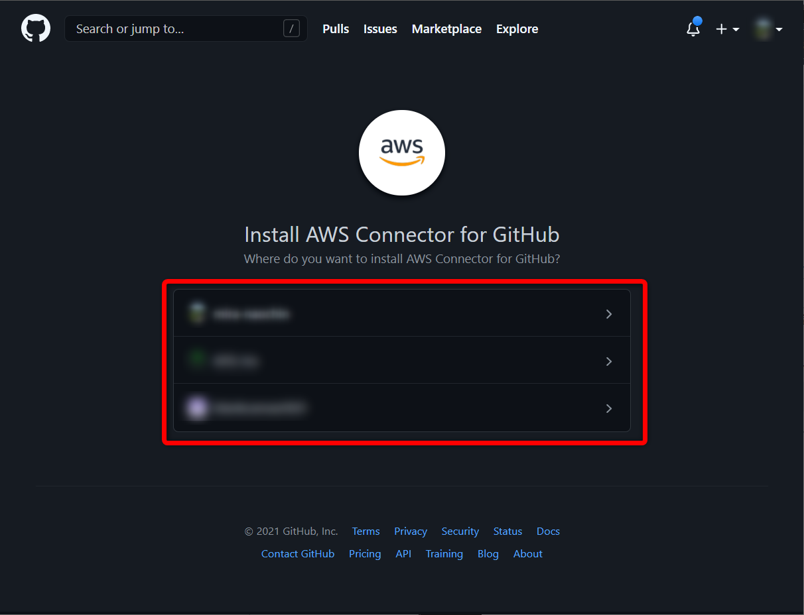
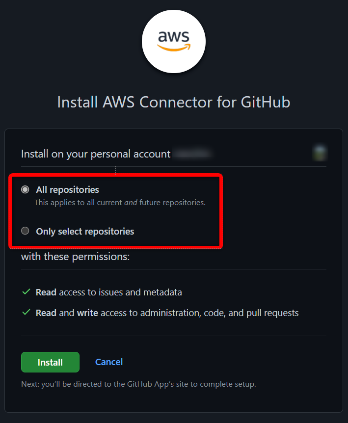
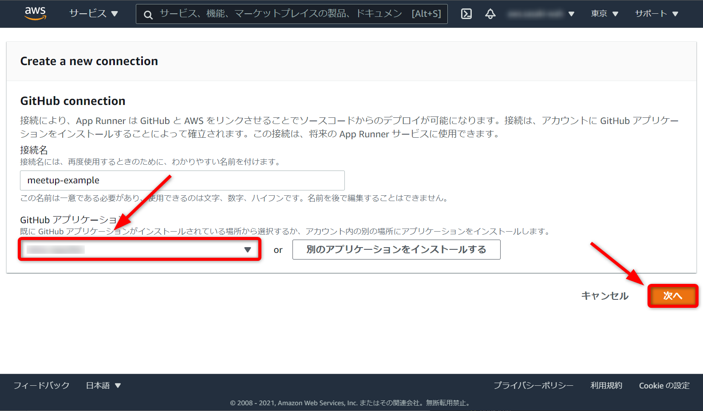
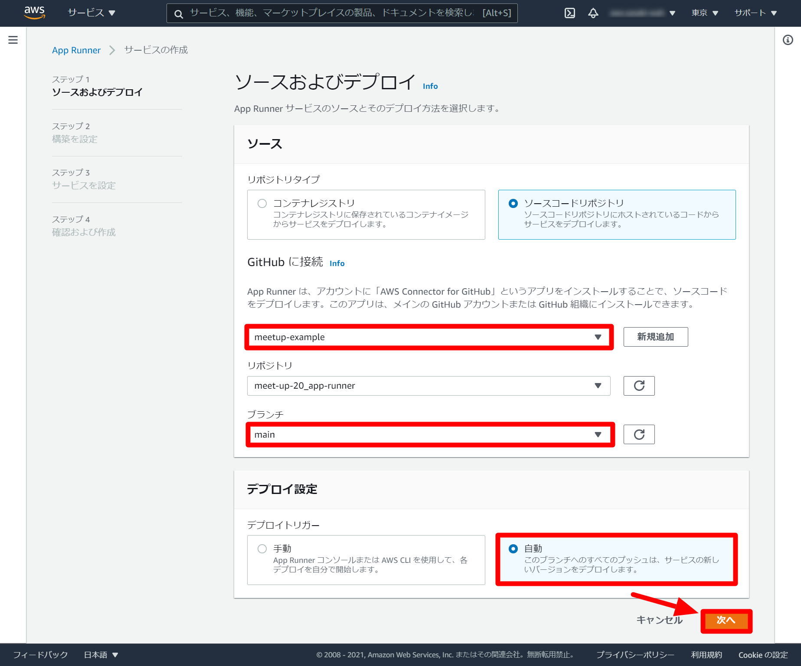
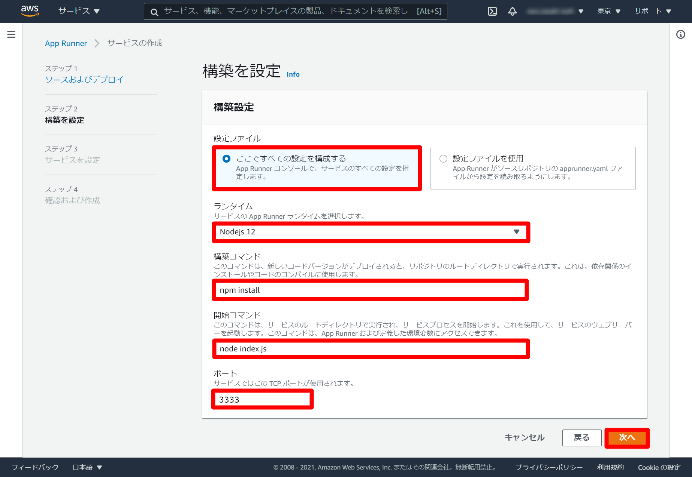

ソースコードリポジトリパターン
この手順では次の手順を進めていきます。
注意事項
- ソースコードリポジトリは、GitHubのみ対応しています。
- サービスランタイムは、Python3 / Nodejs 12のみとなります。
次のリンクよりApp Runnerページへ遷移します。
App Runner
App Runnerサービスを作成ボタンをクリックします。
ソースコードリポジトリを選択します。
GitHubとAWSを連携させるため、新規追加ボタンをクリックします。
「AWS Connector for GitHub」というアプリをGitHubアカウントにインストールするための同意画面が表示されます。Authorize AWS Connector for GitHubボタンをクリックします。
別のアプリケーションをインストールするをクリックします。
「AWS Connector for GitHub」をインストールするGitHubアカウントを選択してください。

「AWS Connector for GitHub」をインストールするリポジトリを選択してください。

選択したリポジトリが次のように「XXXXX/meet-up-20_app-runner」となっていることを確認し、installボタンをクリックしてください。
パスワード入力画面が表示した場合は、パスワードを入力し、Confirm passwordボタンをクリックしてください。
GitHubアプリケーションのセレクトボックスに対象GitHubアカウント名が表示されましたら、次へボタンをクリックしてください。

以下の設定値を選択し、次へボタンをクリックしてください。
GitHubに接続：meetup-example リポジトリ：meet-up-20_app-runner ブランチ：main デプロイトリガー：自動

次の設定値を入力し、次へボタンをクリックしてください。
設定ファイル：ここですべての設定を構成する ランタイム：Nodejs 12 構築コマンド：npm install 開始コマンド：node index.js ポート：3333

次の設定値を入力し、次へボタンをクリックしてください。
サービス名：meetup-app-runner 仮想CPU：1 vCPU メモリ：2 GB

内容の確認を行い、特に問題がなければ、作成とデプロイボタンをクリックします。
ステータスがRunningになると環境作成完了です。
ドメインが発行されますので、デフォルトドメインのURLをクリックします。
次のページが表示されれば、デプロイ完了です。